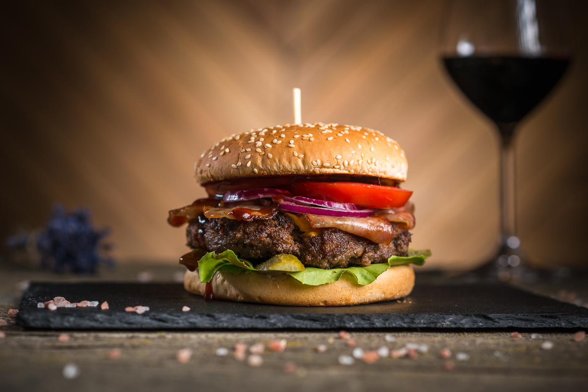

Description
Sink your teeth into a delicious restaurant-style, hamburger recipe made
from lean beef. Skip the prepackaged patties and take the extra time to
craft up your own, and that little extra effort will be worth it. To make
cheeseburgers, about 1 minute before burgers are done, top with sliced
cheese; continue cooking until cheese begins to melt.
Ingredients
- 1 pound ground lean (7% fat) beef
- 1 large egg
- ½ cup minced onion
- ¼ cup fine dried bread crumbs
- 1 tablespoon Worcestershire
- 1 or 2 cloves garlic, peeled and minced
- About ½ teaspoon salt
- About ¼ teaspoon pepper
- 4 hamburger buns (4 in. wide), split
- About ¼ cup mayonnaise
- About ¼ cup ketchup
- 4 iceberg lettuce leaves, rinsed and crisped
- 1 firm-ripe tomato, cored and thinly sliced
- 4 thin slices red onion
Steps
-
In a bowl, mix ground beef, egg, onion, bread crumbs, Worcestershire,
garlic, ½ teaspoon salt, and ¼ teaspoon pepper until well
blended. Divide mixture into four equal portions and shape each into a
patty about 4 inches wide.
-
Lay burgers on an oiled barbecue grill over a solid bed of hot coals or
high heat on a gas grill (you can hold your hand at grill level only 2
to 3 seconds); close lid on gas grill. Cook burgers, turning once, until
browned on both sides and no longer pink inside (cut to test), 7 to 8
minutes total. Remove from grill.
-
Lay buns, cut side down, on grill and cook until lightly toasted, 30
seconds to 1 minute.
-
Spread mayonnaise and ketchup on bun bottoms. Add lettuce, tomato,
burger, onion, and salt and pepper to taste. Set bun tops in place.
Go to homepage